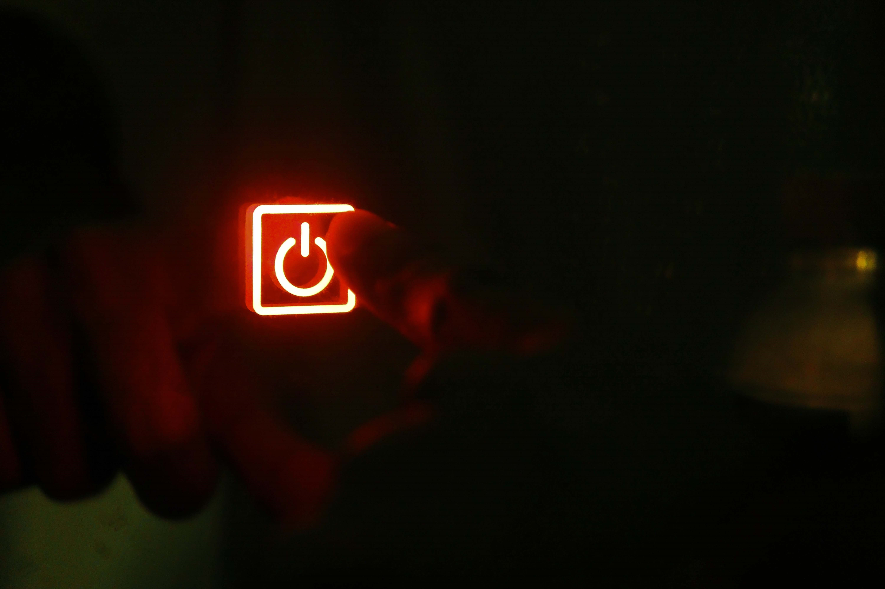
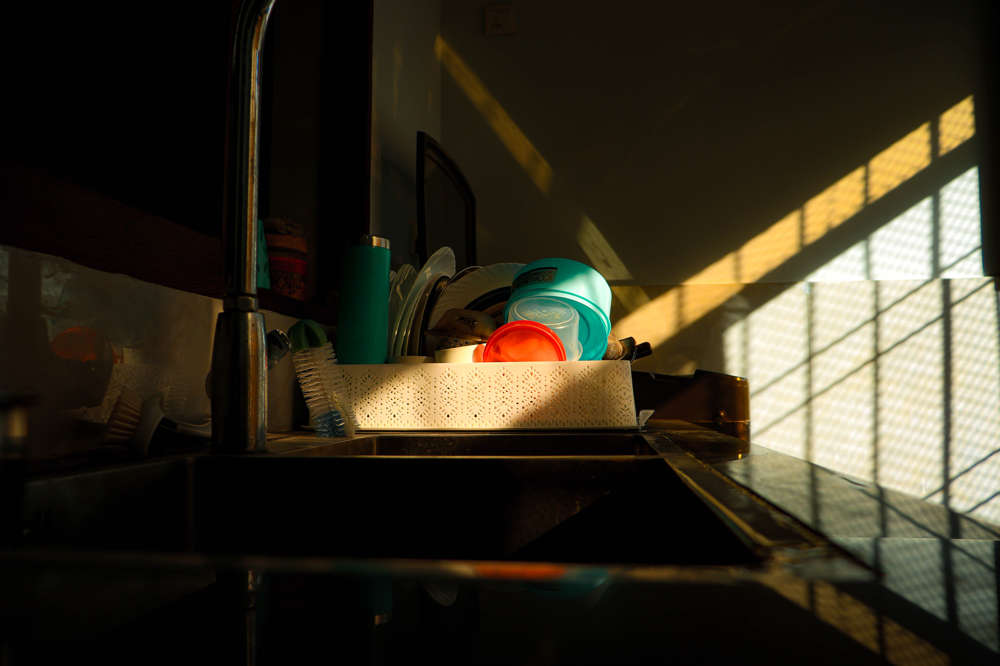

Before:

After:
Before:

After:
Before:

When trying to capture a certain scene, as essential as it is to be aware of:
I will show you 3 photos, and what they look like before versus after the edit.
Now, my goal was to demonstrate how you can
change the look of a photo in post
and also to
prove a point that the edited ones look better
than the original ones.
For example, in the 3rd photo,
the bulb looks cleaner and more transparent!
How amazing is that ?!
I edited each one in around 25 minutes without actually studying color-grading.
hence, it is totally possible that one might find flaws in these.
It is also possible
that some of you might prefer the unedited version slightly more
(especially in
the case of the first two images), which is totally fine.
Always remember that
this is a field where personal preference plays a huge part
and that is why it is
important to try and find fun in the process!.